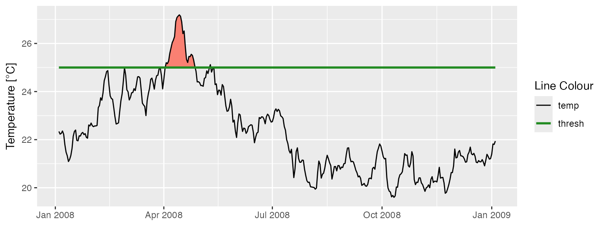
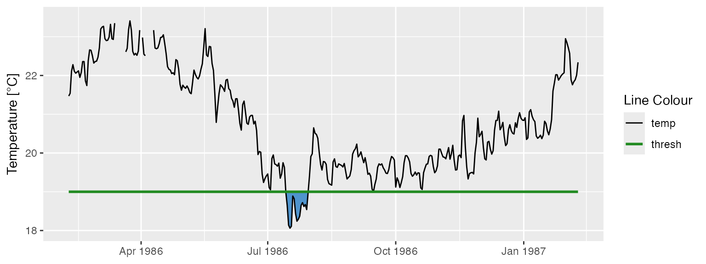

Calculating and Visualising Exceedances
Robert W Schlegel
2025-01-12
Source:vignettes/exceedance.Rmd
exceedance.RmdExceedances
In addition to the calculation of events based on a given percentile,
this package also allows for the calculation of events based on a given
static threshold with the exceedance() function. This is
most useful if one is more interested in testing a time series for
events that exceed a pre-determined static threshold that is already
known to be of particular significance in a given part of the world. The
output of this function may also be used in the calculation of events
that may require two thresholds, such as atmospheric events with ‘tMin’
and ‘tMax’ daily values. For a detailed explanation for how to do this
please see this
vignette. The data requirements for exceedance() are
the same as for ts2clm() and
detect_event().
Calculating exceedances
The calculation of exceedances may be done with only one function as seen here:
# Activate libraries
library(dplyr)
library(ggplot2)
library(heatwaveR)
# Calculate exceedence
exc_25 <- exceedance(sst_WA, threshold = 25)
# Look at a few metrics
exc_25$exceedance %>%
ungroup() %>%
select(exceedance_no, duration, date_start, date_peak, intensity_max, intensity_cumulative) %>%
dplyr::arrange(-intensity_cumulative) %>%
head(5)## exceedance_no duration date_start date_peak intensity_max
## 1 7 52 2011-02-08 2011-02-28 4.74
## 2 6 25 2008-04-03 2008-04-14 2.19
## 3 10 41 2012-03-03 2012-04-10 1.37
## 4 2 17 1999-05-13 1999-05-22 1.40
## 5 5 10 2000-05-03 2000-05-04 1.01
## intensity_cumulative
## 1 87.05
## 2 24.50
## 3 17.98
## 4 14.55
## 5 6.97Note that the resultant output of exceedance() is very
similar to detect_event(), except that the two dataframes
within the list are called threshold and
exceedance, rather than climatology and
event.
Visualising exceedances
Because event_line() and lolli_plot() are
designed to work on the output of detect_event(), if we
want to visualise the results of exceedance() we will need
to do so ‘by hand’ with ggplot2. The code
below works as an example of how to do so:
exc_25_thresh <- exc_25$threshold %>%
slice(9500:9866)
ggplot(data = exc_25_thresh, aes(x = t)) +
geom_flame(aes(y = temp, y2 = thresh, fill = "all"), show.legend = F) +
geom_line(aes(y = temp, colour = "temp")) +
geom_line(aes(y = thresh, colour = "thresh"), size = 1.0) +
scale_colour_manual(name = "Line Colour",
values = c("temp" = "black", "thresh" = "forestgreen")) +
scale_fill_manual(name = "Event Colour", values = c("all" = "salmon")) +
guides(colour = guide_legend(override.aes = list(fill = NA))) +
scale_x_date(date_labels = "%b %Y") +
labs(y = expression(paste("Temperature [", degree, "C]")), x = NULL)
Calculating negative exceedances
Unfortunately there is no antonym for exceedance in the English language, which makes talking about exceedances below a static threshold somewhat awkward. For the purposes of clarity here we will refer to these as negative exceedances.
The exceedance() function may be used to calculate
consecutive days below a threshold as seen here:
exc_19 <- exceedance(sst_WA, threshold = 19, below = TRUE)
exc_19$exceedance %>%
dplyr::ungroup() %>%
dplyr::select(exceedance_no, duration, date_start, date_peak, intensity_mean, intensity_cumulative) %>%
dplyr::arrange(intensity_cumulative) %>%
head(5)## exceedance_no duration date_start date_peak intensity_mean
## 1 28 61 2017-08-09 2017-08-20 -0.6092
## 2 30 65 2018-07-27 2018-08-22 -0.5302
## 3 16 30 2002-09-09 2002-09-25 -0.8763
## 4 17 34 2003-09-06 2003-09-16 -0.7526
## 5 13 24 1997-09-03 1997-09-15 -0.7692
## intensity_cumulative
## 1 -37.16
## 2 -34.46
## 3 -26.29
## 4 -25.59
## 5 -18.46Visualising negative exceedances
Were one to desire a visualisation of these data it could be produced with the following code:
exc_19_thresh <- exc_19$threshold %>%
slice(1500:1866)
ggplot(data = exc_19_thresh, aes(x = t)) +
geom_flame(aes(y = thresh, y2 = temp), fill = "steelblue3", show.legend = F) +
geom_line(aes(y = temp, colour = "temp")) +
geom_line(aes(y = thresh, colour = "thresh"), size = 1.0) +
scale_colour_manual(name = "Line Colour",
values = c("temp" = "black", "thresh" = "forestgreen")) +
scale_y_continuous(limits = c(18, 23.5)) +
scale_x_date(date_labels = "%b %Y") +
labs(y = expression(paste("Temperature [", degree, "C]")), x = NULL)